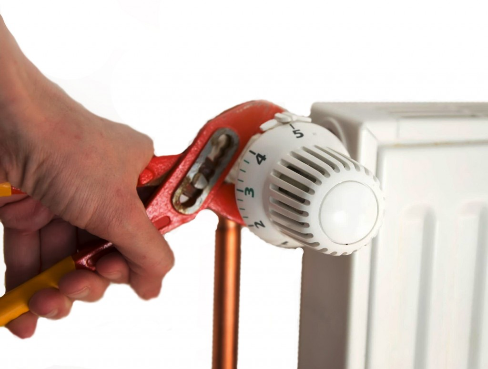

Экономное отопление – возможно ли это?
Сегодня для многих компаний уже не секрет, что газ постепенно будет дорожать и в скором времени отапливать дома газовыми котлами будет дорогостояще и не выгодно. Наша редакция заинтересовалась, какими альтернативными способами можно принести в свой дом тепло и насколько затратны будут эти варианты?
Почему газовые котлы так популярны?
Ни для кого не секрет, что, если к коттеджному поселку подведены газовые коммуникации, владельцы, как правило, стараются пользоваться этим преимуществом и обустраивать свою систему отопления с использованием газовых котлов. Отопление с помощью газовых котлов считается самым удобным и надежным вариантом, и кроме невысоких цен на само топливо – газ – у этого варианта отопления есть и другие плюсы. Например, беспроблемные приобретение и установка агрегата. Конечно же, самый главный плюс – это экономная работа, связанная с особенностями самого котла. Ведь он функционирует при очень небольших энергетических затратах, при этом показывая довольно высокий коэффициент полезного действия. Таким образом, даже при отоплении больших по площади помещений денежные затраты остаются невысокими.
Давайте проведем примерные расчеты. В среднем по рынку газовые котлы можно приобрести по стоимости от 15 до 22 млн бел. руб. Есть, конечно же, модели и за 95 млн, но необходимости в таком затратном приобретении оборудования нет. Расход сжиженного газа для отопления дома в 100 м², как правило, составляет 561 л. В реальности тепловая энергия расходуется в среднем наполовину меньше, ведь в течение отопительного сезона температура наружного воздуха колеблется от плюсовой до самой низкой, изменяется и норма расхода газа.
Если же дом отапливается не сжиженным газом, а газом из пролегающего рядом трубопровода, объем расхода газа можно высчитать по следующей формуле:
L = Q /(qН×0,92),
где L – объемный расход топлива за час, м³;
Q – необходимая тепловая мощность на отопление, кВт;
qН – низшая теплота сгорания топлива;
0,92 – КПД котельной установки.
Путем расчетов мы получаем, что часовой расход газа для отопления дома площадью 100 м² равен 0,53 м³/ч, значит, за месяц расходуется примерно 381 м³. С учетом тарифов на газ сумма на эксплуатацию составит порядка 1 млн бел. руб. в месяц.
К тому же современные конструкции газовых котлов очень удобны в использовании. Подача газа у них происходит беспрерывно, поэтому следить за пламенем и постоянно зажигать агрегат владельцам не приходится. Если же и случится такое, что на некоторое время подача газа прекращается, то благодаря сигналу специального датчика при поступлении газа горелка зажжется автоматически без человеческого вмешательства.
Альтернативы – есть
Мы решили пообщаться с производителями отопительного оборудования, чтобы выяснить для себя, какие варианты можно использовать для полной или частичной замены газового котла.
Представители компании «Механик Энерго» сообщили нам, что сейчас клиенты их фирмы активно начинают осваивать твердотопливые котлы. Возможно, не как основной источник отопления, но, по крайней мере, как резервный. Их отличает длительность горения «без дозаправки» – до 30 ч – и высокий КПД.
Геннадий Галиевский, директор компании «Фанкотерм»:
– Альтернативу газовым агрегатам, в принципе, найти можно. Взять, к примеру, современные твердотопливные котлы – они достаточно экономичны, легки в эксплуатации, обладают высоким КПД. Возможно, твердотопливные котлы доставляют своим владельцам несколько больше хлопот, чем газовые, но с развитием технологий и появлением новых модификаций эта проблема становится все менее ощутимой.
Особенно мне кажутся перспективными пеллетные котлы – одна из разновидностей котлов на твердом топливе. Хотя цены на пеллетные котлы, конечно, несколько выше, чем на обычные твердотопливники, но их преимущества легко уравновешивают этот недостаток. Топливом для этих агрегатов служат небольшие таблеточки – пеллеты. Пеллеты – это энергоноситель нового поколения, гранулированное спрессованное древесное биотопливо, которое позволяет оборудованию работать в автономном режиме на одной заправке от 7 до 30 дней. Судите сами: отопление пеллетами обходится в 3,5 раз дешевле, чем электричеством, в 2,3 раза доступнее, чем дизелем, и почти на 30% выгоднее по сравнению с использованием дровяных печей.
Конечно, не могу не упомянуть про такой современный вариант отопления, как солнечный коллектор. Наши клиенты чаще применяют его для горячего водоснабжения, но и для отопления он тоже актуален. Установка, конечно, далеко не дешевая, с другой стороны – еще лет 5 назад я бы сам отсоветовал покупать его семьям, которые экономят бюджет, т.к. в те времена он был значительно дороже, чем сейчас. Если же у вас есть ресурсы на покупку такого оборудования – вы точно не пожалеете, т.к. в его надежности можно не сомневаться – не менее 25 лет работы гарантированно, и, что самое приятно, такое оборудование не нуждается в топливе, а значит, на его эксплуатацию не приходится тратиться. С учетом роста цен на энергоносители в течение срока использования оборудования вы практически стопроцентно выиграете на его покупке.
Виктор Пеховский, директор компании «БелвентИН»:
– По моему мнению, даже если газ подорожает в несколько раз, лучше, удобнее и дешевле газового отопления альтернатив вы не найдете ближайшие 50 лет точно. Преимущества газового оборудования не только в низких эксплуатационных расходах, но и в автономности. Установив газовый котел, вы на год можете забыть о нем. А твердотопливные или пеллетные котлы требуют постоянного контроля за топливом. Не знаю как кому, а мне всегда кажется это очень неудобным и времязатратным вариантом. Сам эксплуатировал газовый конденсационный котел – понравилось, эффективное оборудование. Пусть и стоит он несколько дороже простого газового котла, зато и КПД у него выше, и окупаемость больше.
А вообще тем, кто опасается подорожания энергоносителей, я бы посоветовал грамотно обустраивать свой дом и стремиться к созданию энергоэффективного жилья (100%-ное утепление, установка систем вентиляции с рекуперацией, использование возобновляемой энергии и т.п.). По такому принципу живут люди в Европе. Да, безусловно, это затратно, но мне такие принципы очень нравятся.
Пеллетные котлы – удобное решение
После газовых котлов пеллетные – одни из самых дешевых альтернатив на рынке отопительного оборудования. Стоимость гранулированных пеллет и их расход меньше, чем у дизельных котлов и других твердотопливных, хотя, конечно, сами пеллетные агрегаты дороже других твердотопливных аналогов. Среди невысокого и среднего диапазона цен на пеллетные котлы 20–26 млн бел. руб. – приемлемая цена. Важная положительная особенность агрегата в том, что пеллетное топливо обеспечивает равномерную генерацию заданной мощности тепловой энергии, в то время как с углем и дровами мощность циклически меняется. Мощность котла, оснащенного пеллетной горелкой, регулируется в широком диапазоне благодаря балансировке подачи топлива и воздуха.
Обслуживать пеллетный котел достаточно просто. Самостоятельно нужно только загрузить в бункер топливо. Пеллеты подаются в топку из специального бункера автоматическим транспортером. Емкость штатного бункера обеспечивает котел топливом примерно на 7 дней, потом хранилище заполняют заново. При желании и этот процесс можно полностью автоматизировать. Есть системы, в которых пеллеты со склада подаются отдельным транспортером.
О том, насколько выгодны и удобны пеллетные котлы в процессе эксплуатации, редакции рассказал наш читатель – Юрий Бумонов, г. Брянск:
– У нас не было возможности подключиться к газовому трубопроводу, поэтому решили с женой выбрать альтернативный вариант отопления. Друзья посоветовали купить твердотопливный котел, и он даже превзошел все наши ожидания. Получается достаточно просто и недорого. Наш агрегат на 16–20 кВт потребляет 1–1,5 куба топлива в месяц. Для понимания: 1,5 куба равняется 1 тонне. Обычно бункер (как и в нашем случае) рассчитан или на треть, или на половину куба, т.е. заполнять бункер нам приходится не чаще, чем раз в неделю, а чистить и того реже – раз в 2 недели. Что ни в какое сравнение не идет с мучениями владельцев дровяного котла, который по 2–3 раза в день нужно закладывать дровами. Еще одно приятное наблюдение относительно пеллетных котлов – стоимость топлива в последние годы снизилась и сегодня составляет примерно €100–150 за тонну пеллет. Для сравнения: 1 тонна дизельного топлива потянет на €550 при схожем расходе топлива и стоимости самого оборудования. Единственное при этом преимущество дизеля – отсутствие необходимости обслуживания оборудования и полная автоматизация, как у газового котла. Пеллетный котел вполне имеет право на жизнь, с газовым, конечно, и дешевле, и удобнее, но если газа нет и дом постоянного проживания, то пеллетный котел однозначно должен стоять в приоритете.
Судя по рассказу нашего читателя, обслуживание пеллетного котла обойдется в 2–3 млн бел. руб. в месяц. Дороже, чем газового, но, согласитесь, достаточно удобно.
Дизель – экономичная установка
Преимущество дизельного отопления заключается в низкой цене установки. Любой другой вид отопления, основанный на сгорании, как правило, потребует больших затрат на установку. В остальном такие устройства на 50% затратнее газовых, а КПД составляет приблизительно 75–85%. Дизельные котлы, как правило, пользуются популярностью у владельцев, районы проживания которых в скором времени должны пройти процесс газификации. Дело в том, что для перевода отопительного котла с жидкого топлива на газ не нужно производить никаких сложных операций, достаточно просто поменять горелку и произвести перенастройку. Установка системы осуществляется очень быстро – в течение нескольких часов.
Недостатки дизельных систем заключаются в регулярном обслуживании и необходимости наблюдения за системой, а также в высокой цене эксплуатации. Кроме того, само по себе дизельное топливо – удовольствие не из дешевых: необходимая в месяц тонна топлива обойдется владельцам в €500–550, или 10–15 млн бел. руб. К тому же установка системы дизельного отопления требует устройства хранилища топлива, а это тоже немалая статья расходов.
Электричество – дорогое удовольствие
Электрические котлы – далеко не самое экономичное отопительное оборудование в процессе эксплуатации, однако давайте сначала рассмотрим преимущества электрических котлов. Во-первых, само оборудование стоит дешевле многих других видов отопительных агрегатов, во-вторых, монтаж его при наличии определенных навыков можно осуществить своими руками. Кроме того, современные электрокотлы позволяют выполнять очень точную регулировку температуры даже без установки систем климат-контроля. Что касается электрических котлов, то можно, не задумываясь, утверждать, что такую систему характеризует простота в установке и эксплуатации, высокий уровень автоматизации, обеспечивающий надежную и качественную работу всей системы. Кроме всего прочего, электрические котлы еще и отличаются самым высоким коэффициентом полезного действия – 100%.
Но и недостатки у этого варианта отопительного оборудования красноречивые: высокая стоимость электрической энергии, зависимость стабильной работы от наличия тока и качества электрической сети.
Тепловые насосы – что скажете?
Могут такие агрегаты быть как единственным, так и вспомогательным источником тепла. Так, грунтовые тепловые насосы – полноценная альтернатива газовому котлу. Они работают с одинаковой высокой производительностью в любое время суток и года. Из недостатков – высокая начальная стоимость, окупаемость более 10 лет, нужен большой участок земли для монтажа грунтового коллектора. К тому же даже лучшие тепловые насосы работают лишь до температуры –25°С, при этом с падением температуры на улице их КПД падает.
Тепловой насос – это устройство, преобразующее низкотемпературное тепло источника в высокотемпературное тепло, необходимое для отопления помещения. При этом источником тепла может быть не только земля, но и вода, воздух. Наиболее распространенными тепловыми насосами являются те, которые используют энергию земли. Обусловлено это наилучшим сочетанием цены и потребительских качеств таких устройств, эффективностью их применения. Эффективность, правда, зависит также и от способа обогревания дома, степени его утепленности, герметичности окон и т.п. Наиболее рациональным является применение низкотемпературных систем отопления, например, так называемых «теплых полов». Связано это с низкотемпературным режимом нагревания воды тепловым насосом, а значит, традиционные радиаторы потребуются увеличенного размера.
По сравнению с электрокотлом тепловой насос может обладать в 4–7 раз меньшим электропотреблением при той же получаемой тепловой мощности. Эту самую разницу тепловой насос извлекает из окружающей среды, т.е. эксплуатационные расходы могут составить порядка 1,5–2 млн бел. руб.
Энергия солнца
Солнечное излучение – это один из самых доступных и распространенных альтернативных источников тепла. А солнечные коллекторы, в свою очередь, самый простой способ эту энергию преобразовать. С каждым годом все больше людей рассматривают коллекторы в качестве дополнительного или даже основного источника энергии для дома.
Из недостатков – солнечные коллекторы в наших температурных условиях не могут быть использованы как единственный источник энергии, т.к. в зимнее время коллекторы работают с очень низкой эффективностью. Кроме того, срок окупаемости солнечных коллекторов пока не уступает тепловым насосам – от 7 до 10 лет.
Примерные расчеты таковы: в ясный день с 1 м² площади батареи можно получить примерно 120 Вт мощности, что не является достаточным даже для работы компьютера. Поэтому для получения более мощных показателей солнечные панели объединяют в настоящие мини-станции, которые становятся необходимым условием работы мощных автономных отопительных систем. Мини-станция площадью 10 м² может выдавать уже более 1 кВт чистой энергии, а в целом 200–300 кВт в месяц – это месячный стандарт для семьи из трех или четырех человек. Для их получения может потребоваться собрать солнечную батарею площадью 20 м², которая сможет выдавать данное количество энергии при солнечной погоде (только при солнечной). Как вы понимаете, солнечный коллектор такого масштаба стоит недешево.
Про преимущества солнечного отопления рассказал главный инженер «Алгабел Солар» Андрей Бедунько:
– В белорусских реалиях коллекторы определенно имеют право на использование, но для отопления дома только солнечных коллекторов как единственного источника тепловой энергии будет недостаточно. Это связано, в первую очередь, с качеством инсоляции: короткий день, низкое положение солнца над горизонтом, постоянная сплошная облачность. Единственная ситуация, когда зимой коллекторы дают значимую выработку тепла – это морозная погода с ярким солнцем. За счет отражения от снега можно получить выработку тепла, сравнимую с летней. Но такая погода обычно стоит за зиму 10–14 дней. В остальное время зимой коллекторы почти бесполезны. Поэтому устанавливают их обычно с расчетом на летнее потребление горячей воды (с учетом дополнительных потребителей тепловой энергии вроде подогрева бассейна). В зимнее время коллекторы работают как дополнительный источник тепловой энергии для предварительного подогрева воды с последующим догревом от основного источника (электрический тэн, твердотопливный или газовый котел, тепловой насос) при необходимости.

{kind=link}
{kind=link}